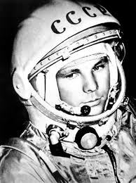
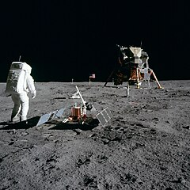
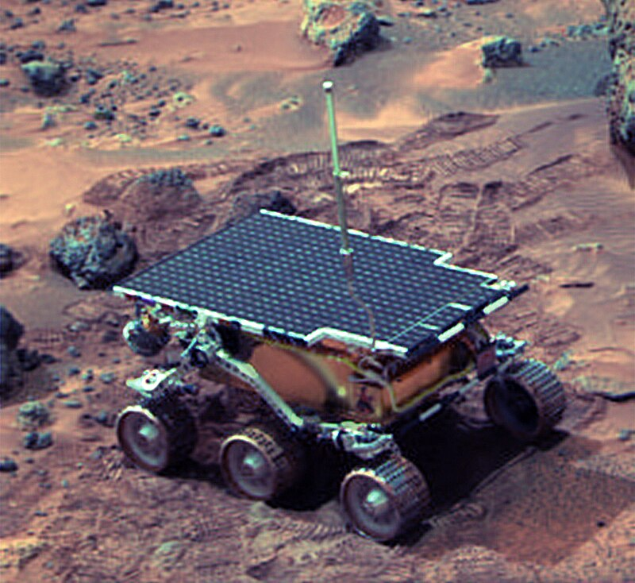
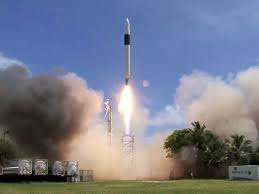
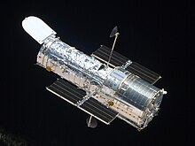
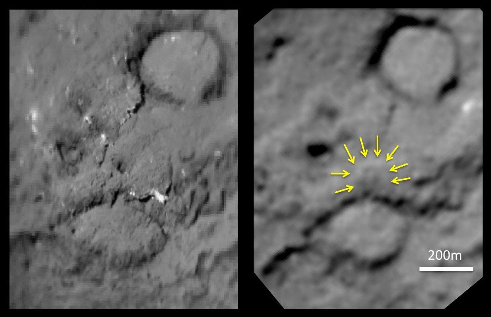
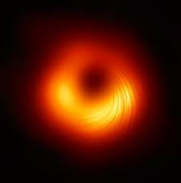
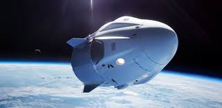

La Exploración Espacial es la aventura y el esfuerzo por entender y descubrir los misterios del universo. Desde los primeros vuelos tripulados hasta las misiones interplanetarias actuales, hemos utilizado tecnologías avanzadas para expandir nuestro conocimiento y capacidades más allá de nuestro planeta. A continuación, se presentan algunos de los hitos más importantes en la historia de la exploración espacial.
| Hito | Año | Descripción | Imagen |
|---|---|---|---|
| Primer viaje espacial (Vostok 1) | 1961 | Yuri Gagarin se convierte en el primer humano en viajar al espacio. |  |
| Primeros pasos sobre la Luna (Apolo 11) | 1969 | Neil Armstrong y Buzz Aldrin caminan sobre la superficie lunar. |  |
| Primer rover en Marte (Sojourner) | 1997 | El rover Sojourner explora la superficie marciana. |  |
| Primera sonda en salir del sistema solar (Voyager 1) | 2012 | La sonda Voyager 1 cruza el heliopausa y entra en el espacio interestelar. |  |
| Primera Estación Espacial Internacional (ISS) | 1998 | Se inicia la construcción de la ISS, un laboratorio de investigación en órbita terrestre. |  |
| Primer cohete privado en órbita (Falcon 1) | 2008 | SpaceX logra el primer cohete privado en alcanzar la órbita terrestre. |  |
| Lanzamiento del Telescopio Espacial Hubble | 1990 | El Hubble revoluciona la astronomía con sus imágenes detalladas del universo. |  |
| Impacto de la sonda Deep Impact en el cometa Tempel 1 | 2005 | La sonda Deep Impact impacta el cometa Tempel 1 para estudiar su composición. |  |
| Observación del agujero negro M87 | 2019 | Primera imagen del agujero negro supermasivo en el centro de la galaxia M87. |  |
| Primer lanzamiento de una misión privada a la ISS | 2022 | La tripulación Ax-1 llegó a la Estación Espacial Internacional a bordo de la nave SpaceX Dragon. |  |